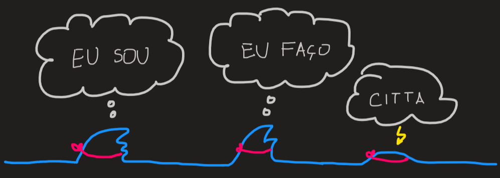

I.5
Saincara é o movimento extroversivo dentro do fluxo dos gunas.
TLDR: O autor começa este sutram por introduzir diferentes interpretações da ideia “A Consciência é eterna e ilimitada”, que essencialmente se sumarizam na imagem de um oceano ilimitado.
Este oceano é dotado do desejo de formar ondas (auto-expressar), o qual se manifesta na prática como a criação (manifestação) da matéria; fá-lo moldando a Consciência através da força prakrti caracterizada pelas suas gunas. Esta criação tem uma estrutura radial (extroversiva) tal como vimos em I.4, a qual esconde progressivamente o núcleo - oceano calmo.
O autor descreve também a teoria por detrás da criação: as primeiras duas ondas a surgir no oceano são - “Eu sou”, “Eu faço”. Apenas depois surge o conceito de mente.
Comentários + Resumo
Comecemos com uma aparente contradição. Nos dois primeiros parágrafos o autor diz que “Consciência Nuclear…. é imutável” (recorda de I.4 que esta é o ponto fixo da evolução do oceano de consciência) e “…purusa é imóvel e imutável”, mas o contexto em que estes excertos estão mergulhados sugere (em meu entender) que prakrti os transforma, donde não podem ser imutáveis.
Pergunta: Como é que algo imutável pode ser mutável?
Resposta:
O autor procura também descrever de uma forma compreensível o facto de a Consciência ser infinita e intemporal dizendo que algo na linha: como não conseguimos conceber mentalmente as infinidades the next best thing é compreender as seguintes ideias:
O tempo apenas existe no nosso micro-cosmos (=mente?) e é uma medida que permite sequênciar eventos. Observa como a noção de passagem de tempo pode ser construída de duas formas:
- pela sequenciação de eventos, dispensado assim um relógio
- associando a cada evento um numero (hora)
Ambos são apenas construções que apenas existem no micro-cosmos.
Pergunta: Será que o tempo existe no macro-cosmos?
Resposta:
Dizer que a criação é eterna é equivalente a dizer que a criação (do universo ou objectos da consciência) tem um inicio, mas esse ponto partida é arbitrário. A esse ponto partida chamamos kamabiija.
Pergunta: Será isto uma boa definição de eterno?
Resposta:
a Consciência é ao mesmo tempo amarrada e não amarrada
consciência é temporal como intemporal
Consciência é livre mesmo quando parece pertencer à escravidão
Os pontos acima parece-me uma complicação desnecessária, a imagem de um oceano eterno e ilimitado onde ondas se formam a partir da calma e depois desvanecem resume bem a dinâmica de purusa.
O segundo paragrafo deste sutram introduz uma ideia nova:
A Consciência é dotada do desejo de se auto-expressar (icchasshakti), esse desejo desencadeia a acção da força prakrti a moldar purusa.
Já sabemos que durante época de saincara, prakrti molda purusa de muitas formas (depende das gunas), mas comum a todas, temos a propriedade de serem modificações extrovertidas ou centrifugas, em direcção à manifestação.
O que é que quer dizer “modificações extrovertidas ou centrifugas, em direcção à manifestação”? Simplesmente estamos a dizer que purusa e as suas modificações têm uma estrutura radial tal como vimos na primeira figura de I.4., a construção dos ramos (outward flow que introduzimos em I.4.) é guiado por prakrti durante a época de saincara, como iremos ver em I.6 na época de pratisaincara, a direcção é inversa.
O autor recorda neste segundo paragrafo uma analogia que já vimos: Shiva (purusa) adormecido (imóvel e imutável), desperta e dá inicio à sua acção mental ou física. As propriedades que caracterizam qualquer uma das acções que Shiva pode tomar são:
Serem desencadeadas pelo desejo de manifestação
Afastarem Shiva do estado adormecido
Assim também podemos desenhar um estrutura radial, onde o centro temos Shiva adormecido e em seu redor emergem ramos que caracterizam as diversas acções (manifestações) físicas e mentais (modificações mentais) que realiza.
A emergência desses ramos é desencadeada pela acção de prakrti e este por sua vez é desencadeada pelo desejo da manifestação. O autor introduz a palavra pravrtti para este desejo de modificações mentais; vrtti significa ocupação, tendência, modificação mental e pra significa para a frente.
Esta analogia resume a ideia de que o oceano de consciência ganha ondas devido à acção de prakrti tal como já tínhamos visto, o que é novidade é que tal vem em resultado do desejo que tal ocorra.
Exemplo da acção de prakrti sobre purusa:
Quando a componente sattvaguna (componente subtil) da força prakrti domina, o oceano calmo de consciência (purusa) adquire o conhecimento de que é consciência, ou seja, adquire o conhecimento de “Eu”, designa-se este conhecimento por mahat ou mahatattva. Tratando-se de um objecto da consciência este é representado por uma onda. A Consciência que inicialmente era pura passou a ter uma impureza.

Como é que sabemos que a primeira onda que prakrti introduz no oceano é uma onda que descreve a consciência como sendo o sujeito? Por introspecção sobre a questão “Como é que sabemos que existimos?”, leva-nos a concluir que o sentido de existência é primordial em todos nós. Assim, esta primeira onda no oceano [desbloqueia a habilidade] de testemunhar-se a si mesma e aos outros objectos da consciência que eventualmente surjam no oceano.
As três componentes de prakrti estão em constante mudança, após a componente sattvaguna ser dominante e introduzir o conceito de “Eu existo” (Aham gachhami) neste oceano de consciência, esta componente diminui ao mesmo tempo que a componente rajoguna aumenta. Ora uma força prakrti em que esta componente domina cria outra onda no oceano, que neste caso representa o conceito de “autoria”, “eu faço”, também designado por aham ou ahamtattva. Observa o Eu em “Eu faço”, a onda “Eu faço” necessita do “Eu” e logo só se pode formar pois previamente temos mahat (Eu).
E assim o oceano originalmente calmo passa a ser um oceano com duas ondas, que correspondem a duas habilidades: testemunha e capacidade de acção - diz-se que o oceano está mais qualificado do que antes, mais amarrado.
Um oceano com estas duas impurezas (mahat + aham) não pode ainda actuar pois não há (segundo o autor) nenhum objecto no oceano onde actuar. Esse objecto onde se actua é designado por citta.
Aqui entra uma parte pouco clara do livro, em meu entender: mahat + aham actuam sobre citta através de prakrti dominado pela componente tamoguna. Elaborando, citta ainda não é um objecto da consciência concreto (como por exemplo a cadeira onde estou sentado) é sim aquilo a que o autor chama de “mente”; pela minha interpretação, a seguinte analogia parece-me útil; citta, é como uma no oceano de consciência que ainda não se formou completamente, é como uma “onda bebé”. É sobre citta que as duas ondas “Eu” e “Eu faço” actuam para (por intermédio de prakrti onde tamoguna domina) para fazer evoluir esta “onda bebé” para uma onda que represente um objecto concreto da consciência. Dizemos assim que citta é designado por “matéria” da mente (é aquilo que entendemos intuitivamente por mente) e tem o potencial para se transformar num pensamento.

O universo físico, denso, inanimado é construído pela acção de prakrti forte em tamoguna sobre citta. Temos assim um oceano de consciência com cada vez mais ondas, i.e., cada vez mais qualificado, amarrada; a época temporal em que prakrti se comporta desta forma é designado por saincara.
Dito de outra forma prakrti aprisiona gradualmente purusa, i.e., dá-lhe estrutura (ver figuras I.4) resultando assim um progressiva ignorância sobre a sua verdadeira natureza - o seu núcleo.
A este processo de aprisionamento é também designado por avidyamaya pois avidya = ignorância; ver fig 2 de I.4, as setas outward flow - também chamados avaranii shakti - representam a acção de construção de ramos, i.e., aprisionamentos que encobrem o núcleo.
As três ondas - mahat (“Eu sou”), aham (“Eu faço”) e citta (objecto) - da consciência estão presentes tanto na consciência de cada um de nós (micro-cósmica) como a na consciência universal (macro-cósmica).
Ao nível micro-cósmico notemos que mahat, aham e citta são essênciais para que se formem pensamentos, verificamos isto notando por exemplo que o nosso discurso é formado por sujeito, verbo, predicado (objecto)
Contraste:
| consciência individual (micro-cosmica) | consciência universal (macro-cosmica) |
|---|---|
| um pensamento de cada vez | muitos pensamentos em simultâneo |
| muitos desejos | um desejo - a libertação de todos os seres durante as suas épocas de prantisaincara |